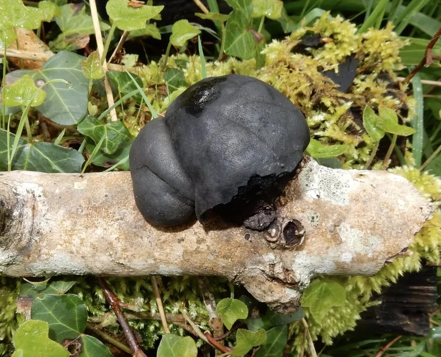

真菌 · 真菌界
轮层炭角菌 Daldinia concentrica

炭角菌科木腐真菌，子座半球形、黑色如炭，剖面有同心银灰环层，生于阔叶树枯木，不可食但可入药。
- 分类
- 门子囊菌门纲粪壳菌纲目炭角菌目科炭角菌科属轮层炭壳属
- 栖息环境
- 阔叶树枯枝、倒木与树桩上，秋季发生，子座可越冬
- 地理分布
- 北半球温带广布，中国各地及欧洲、北美常见
- 保护级别
- 暂无评估；种群稳定
物种志
轮层炭角菌的子座半球形至近球形，直径 2–7 厘米，表面黑色至暗褐色，初时带一层灰褐色粉霜，成熟后光滑坚硬如炭。剖面可见明显的同心环层，银灰与黑色相间，是其最显著的鉴定特征。子囊壳埋生于子座表层，子囊孢子褐色、单胞。
轮层炭角菌生于白蜡树、榆树等阔叶树的枯枝、倒木与树桩上，是常见的木腐菌，秋季发生，子座可越冬。它不可食用，质地坚硬如木炭；但有药用记载，民间将子座烧炭研末用于止血、消炎，或煎水外洗。它在森林中参与枯木分解，也在火灾后迅速定殖，是研究真菌次生代谢与炭化材料的对象之一。观察时可直接看到剖面的同心轮层。
形态与习性
- 子座半球形，直径 2–7 厘米，黑色如炭
- 剖面同心环层，银灰与黑色相间
- 孢子子囊孢子褐色单胞，埋生于表层
- 生境阔叶树枯枝与树桩，秋季发生
- 食用性不可食用，质地坚硬如炭
- 药用民间烧炭研末止血消炎，仅外用
趣味知识
- 把轮层炭角菌切开，能看到一圈圈银灰与黑色相间的同心环，像树木年轮。
- 它的子座坚硬如炭，敲起来有清脆的响声，因此得名“炭角菌”。
- 它不可食用，但民间把子座烧成炭研末，用于外敷止血。
- 火灾后的枯木上它常迅速出现，是典型的“火后真菌”之一。